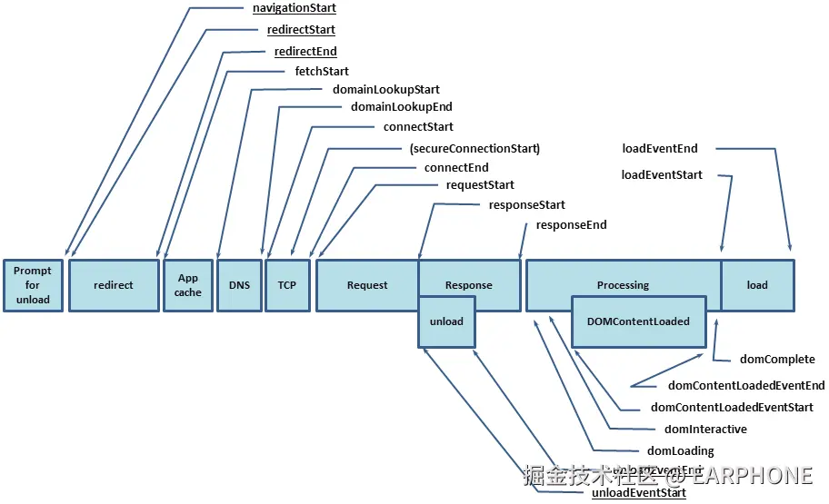

一、概念
前端埋点是指在网页或者应用程序中插入特定的代码，用于收集用户的行为数据并发送给服务器进行分析。这些数据可以包括用户的点击、浏览、输入等操作，帮助开发者了解用户的在其网站中的行为，从而进行针对性的优化和改进。
前端埋点通常包括以下几个步骤：
- 定义事件：定义需要收集的数据事件，如点击、浏览等。
- 添加代码：在网页或应用程序中添加特定的代码，用于收集事件数据。
- 发送数据：将收集到的数据发送给服务器进行分析。
- 分析数据：对收集到的数据进行分析和挖掘，找出用户行为规律和需求，为产品的改进和优化提供依据。
二、前端监控
（一）常见的监控
数据监控 (主要关注用户在网站或应用中的行为和交互)
- PV：即页面浏览量或点击量；
- UV：指访问某个站点或点击某条新闻的不同 IP 地址的人数
- 用户在每一个页面的停留时间
- 用户通过什么入口来访问该网页
- 用户在相应的页面中触发的行为
性能监控 (主要关注网站或应用的加载速度、响应时间和用户体验等方面)
- 不同用户，不同机型和不同系统下的首屏加载时间
- 白屏时间
- http 等请求的响应时间
- 静态资源整体下载时间
- 页面渲染时间
- 页面交互动画完成时间
异常监控 (主要关注网站或应用在运行过程中是否出现错误或异常)
- Javascript 的异常监控
- 样式丢失的异常监控
（二）性能数据
| 字段 | 描述 | 计算方式 | 意义 |
|---|---|---|---|
| unload | 前一个页面卸载耗时 | unloadEventEnd - unloadEventStart | - |
| redirect | 重定向耗时 | redirectEnd - redirectStart | 重定向时间 |
| appCache | 缓存耗时 | domainLookupStart - fetchStart | 读取缓存的时间 |
| dns | DNS 解析耗时 | domainLoopupEnd - domainLookupStart | 观察域名解析服务是否正常 |
| tcp | TCP 连接耗时 | connectEnd - connectStart | 建立连接的耗时 |
| ssl | SSL 安全连接耗时 | connectEnd - secureConnectionStart | 反映数据安全连接建立耗时 |
| response | 响应数据传输耗时 | responseEnd - responseStart | 观察网络是否正常 |
| dom | DOM 解析耗时 | domInteractive - responseEnd | 观察 DOM 结构是否合理，是否有 JS 阻塞页面解析 |
| dcl | DOMContentLoaded 事件耗时 | domContentLoadedEventEnd - domContentLoadedEventStart | 当 HTML 文档被完全加载和解析之后，DOMContentLoaded 事件被触发，无需等待样式表、图像的完成加载 |
| resources | 资源加载耗时 | domComplete - domContentLoadedEventEnd | 可以观察文档流是否过大 |
| domReady | DOM 阶段渲染耗时 | domContentLoadedEventEnd - fetchStart | DOM 树和页面加载完成时间，会触发 domContentLoaded 事件 |
| 首次渲染耗时 | 首次渲染耗时 | responsedEnd - fetchStart | 加载文档到看到第一帧非空图像的时间（白屏时间） |
| 首次可交互时间 | 首次可交互时间 | domInteractive - fetchStart | DOM 树解析完成时间，此时 document.readyState 为 interactive |
| 首包时间耗时 | 首包时间耗时 | responseStart - domainLookupStart | DNS 解析到响应返回给浏览器第一个字节的时间 |
| 页面完全加载时间 | 页面完全加载时间 | loadEventStart - fetchStart | - |
| onLoad | onLoad 事件耗时 | loadEventEnd - loadEventStart | - |
性能采集： developer.mozilla.org/zh-CN/docs/…
- PerformanceTiming （精度不够，只能到毫秒，已废弃）
- PerformanceNavigationTiming（精确到纳秒）
PerformanceObserver
- observe()：注册一个观察器，指定要观察的性能指标和回调函数。
- disconnect()：取消所有注册的观察器。
- takeRecords()：获取所有已有的性能测量结果。
- onperformanceentry()：处理性能观察事件的回调函数。
window.addEventListener("load", (e) => {
// PerformanceTiming
const timing = window.performance.timing;
const { domComplete, domLoading } = timing;
const domTiming = domComplete - domLoading;
console.log("domTiming: ", domTiming);
// PerformanceNavigationTiming
const perEntries = window.performance.getEntries();
const { domainLookupStart, domainLookupEnd } = perEntries[0];
const dnsTiming = domainLookupEnd - domainLookupStart;
console.log("dnsTiming: ", dnsTiming);
// PerformanceObserver
// 创建一个新的PerformanceObserver实例
const observer = new PerformanceObserver((list) => {
const entries = list.getEntries();
entries.forEach((entry) => {
if (entry.name === "first-paint") {
console.log("First Paint:", entry.startTime);
} else if (entry.name === "first-contentful-paint") {
console.log("First Contentful Paint:", entry.startTime);
}
});
});
// 启动PerformanceObserver并指定观察的entryTypes为'paint'
observer.observe({ entryTypes: ["paint"] });
});
三、埋点的分类
| 类型 | 简述 | 举例 |
|---|---|---|
| 展现埋点 | 指的是在产品的特定位置（如网页，应用界面）设置的，用户记录用户是否看到展现了该位置的特定内容或元素的埋点。 | 在一个网页中，我们希望知道用户是否看到了某个广告的特定的推广信息，这时候可以使用展现埋点来记录。展现埋点通过会记录展现的次数，以及展现的具体内容等信息。 |
| 曝光埋点 | 曝光埋点和展现埋点类似，也是用于记录用户是否看到特定内容或元素的埋点。但曝光埋点更侧重于记录用户看到的内容或元素是否被充分地曝光，即用户是否有机会注意到该内容或元素。 | 在一个广告投放中，我们可能希望知道广告是否被用户充分看到（曝光），这时就可以使用曝光埋点来记录。曝光埋点通常会记录曝光的次数，以及曝光的具体内容等信息。 |
| 交互埋点 | 交互埋点是指在产品的特定位置设置的，用于记录用户与该位置的特定内容或元素进行交互（如点击、填写、分享等）的埋点。 | 在一个网页中，我们可能希望知道用户是否点击了某个按钮或链接，这时就可以使用交互埋点来记录。交互埋点通常会记录交互的次数，以及交互的具体内容等信息。 |
四、前端常用的几种埋点方案
（一）常见埋点
代码埋点：
需要开发人员在网页中手动添加跟踪代码，通常是在事件触发的地方添加一段 JavaScript 代码，用于记录用户的行为数据，并发送给后端服务器进行分析。这种方式的优点是灵活性高，可以精确捕获到各种复杂的用户行为，但缺点是开发成本较高，且需要一定的技术门槛。
可视化埋点：
通常通过一个可视化的界面来完成，用户可以在界面上选择要跟踪的事件和页面，然后系统会自动生成相应的跟踪代码，用户只需要将其添加到网页中即可。这种方式的优点是操作简单，无需具备技术背景也可以进行数据跟踪，但缺点是灵活性较低，可能无法满足一些复杂的跟踪需求。
无痕埋点：
称为全埋点或自动埋点，它通过在网页中自动采集所有用户行为数据，然后发送给后端服务器进行分析。这种方式的优点是无需手动添加跟踪代码，可以大幅度降低开发成本，但缺点是可能会采集到大量的冗余数据，且难以精确捕获到一些复杂的用户行为。
| 分类 | 代码埋点 | 可视化埋点 | 无痕埋点（全埋点/自动埋点） |
|---|---|---|---|
| 原理 | 按需埋点，跟迭代运行，定义好埋点事件后添加相应埋点代码 | 将核心代码与埋点配置分开，在可视化界面中编辑埋点信息生成埋点配置，从服务端拉取配置，根据配置监听相关交互操作并采集上报 | 通过 SDK 将程序中的数据尽可能多的采集、存储下来，以备后续使用 |
| 常见场景 | 无痕埋点无法覆盖到，比如需要业务数据 | 简单规范的页面场景 | 简单规范的页面场景 |
| 优势 | 可以在任意时刻，精确的发送或保存所需要的数据信息 | 开发成本低，运营人员可直接进行相关埋点配置 | 由于采集的是全量数据，所以产品迭代过程中是不需要关注埋点逻辑的，也不会出现漏埋、误埋等现象 |
| 不足 | 工作量较大，每一个组件的埋点都需要添加相应的代码 | 可视化埋点可以埋点的控件有限，不能手动定制 | 无埋点采集全量数据，给数据传输和服务器增加压力无法灵活的定制各个事件所需要上传的数据 |
| 典例 | 友盟、百度统计 | Mixpanel | GrowingIO |
（二）埋点数据收集
| 类型 | 页面浏览数据 | 用户行为数据 | 错误数据 | 用户属性数据 | 设备信息 | 使用时长数据 | 搜索关键词数据 |
|---|---|---|---|---|---|---|---|
| 包含 | 页面的 PV、UV、停留时间 | 用户的点击、滚动、输入等操作行为 | 代码中的错误信息、异常情况 | 用户年龄、性别、地域等 | 用户设备类型、操作系统、浏览器等信息 | 用户使用产品的时长、频次等 | 用户在搜索框中输入的关键词信息 |
| 作用 | 反映页面受欢迎程度以及用户黏性 | 反映用户的兴趣和偏好 | 帮助开发者定位和解决问题 | 定位用户的数据、营销 | 优化产品跨平台体验 | 反映产品的用户黏性和活跃度 | 优化产品搜索功能 |
（三）如何开发埋点 SDK
主要从三点数据监控、性能监控、异常监控出发；
细节大概分为 DOM 事件监听、JS 错误、PV 来进行展开；
export default class Tracker {
private data: Options;
public constructor(option: Options) { //...
}
// DOM 事件上报
private domTracker() { //...
}
// JS 错误上报
private jsError() { //...
}
// PV 上报
private pv() { //...
}
// 数据上报到后端
private sendData()<T>(data:T) { //...
}
}
- DOM 监控上报
export default class Tracker {
private data: Options;
private eventList: string[] = ['click', 'dbclick', 'mousedown', 'mouseup', 'mouseenter', 'mouseout', 'mouseover'];
public constructor(option: Options) {
// ...
}
private domTracker () {
this.eventList.forEach(item => {
window.addEventListenter(item, e => {
let element = e.target as HTMLElement;
let isTarget = element.getAttribute('target-key');
if(isTarget) {
this.sendData({type: 'DOM'});
}
})
})
}
private sendData()<T>(data:T) {
// ...
}
}
- JS 错误上报(逻辑错误、资源加载错误、promise 错误)
- 逻辑错误
JS 中逻辑表达式的错误可以通过 window.addEventListener('error', function () { })
window.addEventListener("error", (e) => {
console.log("e: ", e);
});
- 资源加载错误
常见的是页面的图标、图片等资源丢失；
可以通过 window.addEventListener('error', function () { }) 来捕获错误；
区分于逻辑错误，可以通过 ErrorEvent 判断当前错误类型，逻辑错误事件的原型链存在 ErrorEvent;
window.addEventListener(
"error",
(e) => {
e.preventDefault();
// 判断错误类型
const isErrorEvent: Boolean = e instanceof ErrorEvent;
if (!isErrorEvent) {
// 资源加载错误
this.sendData({
type: "resource",
msg: e.message,
});
return;
}
this.sendData(
// js 错误
{
type: "js",
msg: e.message,
}
);
},
true
);
- promise 错误（promise 内部产生的错误、 promise 的 reject 状态错误）
通过 unhandledrejection 进行捕获
window.addEventListener("unhandledrejection", (e: PromiseRejectionEvent) => {
e.preventDefault();
e.promise.catch((error) => {
// 区分 promise 的两种错误消息
let msg = error?.message || error;
this.sendData({ type: "promise", msg });
});
});
- PV 上报
页面访问量监听可以通过 history 和 hash 两种路由来实现数据监听上报
- hash 路由 hash 路由的监听可以采用 hashChange 事件来进行监听
window.addEventListener("hashchange", (e) => {
this.sendData({ type: "hash", msg: e });
});
- history 路由
history 路由模式区别于 hash 不能使用 addEventListenter 来进行事件监听，只能通过自定义事件来监听 history 路由的改变。
设计思路：由于 history 路由的跳转只能通过 pushState 和 replaceState 来操作，可以通过重写 pushState 以及 replaceState （保留原有方法的功能）并在完成路由跳转完成的同时出发自定义事件进行 pv 的统计。
this.historyType.forEach((item: keyof History) => {
let origin = history[item];
let eventHistory = new Event(item);
(window.history[item] as any) = function (this: any) {
origin.apply(this, arguments);
window.dispatchEvent(eventHistory)
}
window.addEventListener(item, () => {
this.sendData({ type: 'history', msg: item })
})
})
如何自定义事件？
创建自定义对象->通过 addEventListener 监听自定义事件 -> 执行操作时派发自定义事件
const e = new Event("customEvent");
window.addEventListener("customEvent", (e) => {
console.log("捕获自定义事件");
});
function btnClick() {
window.dispatchEvent(e);
}
（四）数据上报
xhr 接口请求
采用接口请求的方式是最简单的，类比于请求其他业务接口，只不过上传的是埋点数据。一般情况下，公司处理埋点的服务器和业务逻辑的服务器可能不是同一台，可能产生跨域问题。另一方面，如果在上报的过程中刷新或者重新打开新页面，可能会造成埋点数据的缺失，所以传统的 xhr 接口请求并不难很好的适应埋点的需求。
img 标签（使用 GIF 上报）
img 是通过将埋点数据伪装为图片 URL 的请求方式避免跨域问题。但浏览器对于 URL 的长度会有限制，所以 img 上报不适合大数据量上报的场景。同时也会存在刷新或者打开页面的时候上报数据丢失。
a. 那为什么要使用请求 GIF 图片的方式上报数据呢？
防止跨域
一般来说，打点域名都不是当前的域名，所以几乎所有接口的请求都会构成跨域。而跨域请求很容易由于配置不当被浏览器拦截报错。但图片的 src 属性并不会跨域，并且同样跨域发起请求。
防止阻塞页面加载，影响用户体验
一般创建资源节点后只有将对象注入到浏览器 DOM 树后，浏览器才会实际发送资源请求。反复操作 DOM 容易引发性能问题，而且加载 JS/CSS 子资源还会阻塞页面渲染，影响用户体验。 使用图片打点不用插入 DOM ，只要在 JS 中 new 出 Image 对象就能发送请求，而且还没有阻塞问题。在没有 JS 的浏览器环境中也可以通过 img 标签正常打点，这是其他类型的资源请求所做不到。
相比 PNG/JPG，GIF 的体积最小 BMP：74 字节；PNG：67 字节；GIF：43 字节； 据统计，同样的响应 GIF 可以比 BMP 节约 41%的流量，比 PNG 节约 35%的流量。
b. 为什么大多数采用 1*1 像素的透明 GIF 来上报？
- 1*1 像素是最小的合法图片。通过图片打点，一般来说，图片最好是透明的，不影响页面本身的渲染效果，同时表示图片透明只要使用一个二进制位标记图片是透明色即可，不用存储色彩空间数据，节约体积。
sendBeacon()
sendBeacon() 方法用于将数据异步传输到服务器，通常用于收集用户行为数据或跟踪用户活动。该方法可以确保数据在页面关闭或刷新之前发送给服务器，从而避免数据丢失。
sendBeacon() 方法接受两个参数：一个包含要发送的数据的字符串，以及一个可选的 URL，表示要将数据发送到哪个服务器。如果未指定 URL，数据将发送到当前页面的 URL。缺点就是在某些浏览器上存在兼容性问题。
navigator.sendBeacon(
"http://127.0.0.1:5500/data",
JSON.stringify({
event: "pageview",
url: window.location.href,
time: Date.now(),
})
);